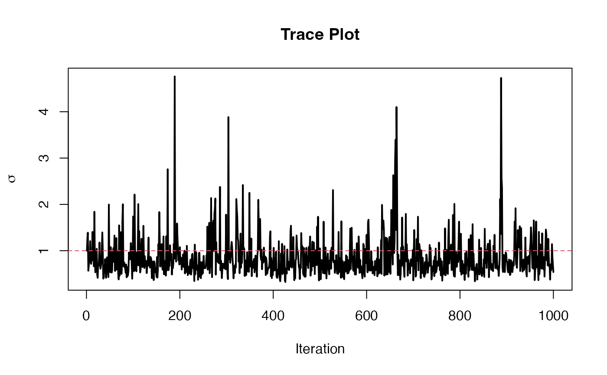

equi_mcmc obtains posterior draws that are useful in optimal
equivariant estimation under the array normal model.
equi_mcmc(X, itermax = 1000, start_identity = FALSE, print_iter = FALSE, mode_rep = NULL)
| X | A tensor. |
|---|---|
| itermax | The number of iterations in the Gibb's sampler. |
| start_identity | Should we start the component covariance matrices at the identity (TRUE) or the sample covariance matrices (FALSE)? |
| print_iter | Should we print the iteration number at each iteration? |
| mode_rep | The mode that contains samples. I.e., the mode whose component covariance matrix is the identity. If NULL then no modes are assumed to have identity covariance. |
Phi_inv List of posterior draws of the inverse of
the cholesky square roots of each component covariance
matrix. Phi_inv[[i]][,,j] provides the \(j\)th sample
of the \(i\)th component.
sigma Vector of posterior samples of the overall scale
paramater.
equi_mcmc obtains posterior samples of the component
covariance matrices from the array normal model. This is with
respect to using the right Haar measure over a product group of
lower triangular matrices as the prior.
This returns only the upper triangular Cholesky square root of the inverses of the component covariance matrices. Equivalently, these are the inverses of the lower triangular Cholesky square roots of the component covariance matrices. This is because sampling the inverse is faster computationally and the Bayes rules (based on multiway Stein's loss) only depend on the inverse.
Gerard, D., & Hoff, P. (2015). Equivariant minimax dominators of the MLE in the array normal model. Journal of Multivariate Analysis, 137, 32-49.
sample_right_wishart and
sample_sig for the Gibbs
updates. convert_cov and
get_equi_bayes for getting posterior summaries
based on the output of
equi_mcmc. multiway_takemura for an
improvement on this procedure.
#Generate data whose true covariance is just the identity. p <- c(2,2,2) X <- array(stats::rnorm(prod(p)),dim = p) #Then run the Gibbs sampler. mcmc_out <- equi_mcmc(X) plot(mcmc_out$sigma, type = 'l', lwd = 2, ylab = expression(sigma), xlab = 'Iteration', main = 'Trace Plot')abline(h = 1,col = 2,lty = 2)